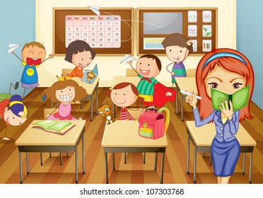

Elementary school
He started elementary school at the age of seven and had a strict teacher
until the fifth grade. At the beginning of his education, he was not a very good student.
He was always pass with B’s. He got acquainted with the English language in the third grade
of elementary school. He went to private lessons with a professor of Serbian language and literature,
who taught private English lessons for young students. The same teacher taught him the Serbian-Croatian
language, as it was then called, in the older classes. Today it is only the Serbian language.
In the fifth grade, there was a mixing of classes and there were no longer the same students
in the class as in the fourth grade. From the fifth to the eighth grade he was an excellent
student, with all A's, which the teacher didn't believe until she went and saw for herself what
kind of grades he had. In eighth grade, it gets tough. He was in love until then, but bad things
happened in the state itself. We were under sanctions where the whole country was isolated from
the world. We also had hyperinflation and a shortage of even bread. He then gave up in school.